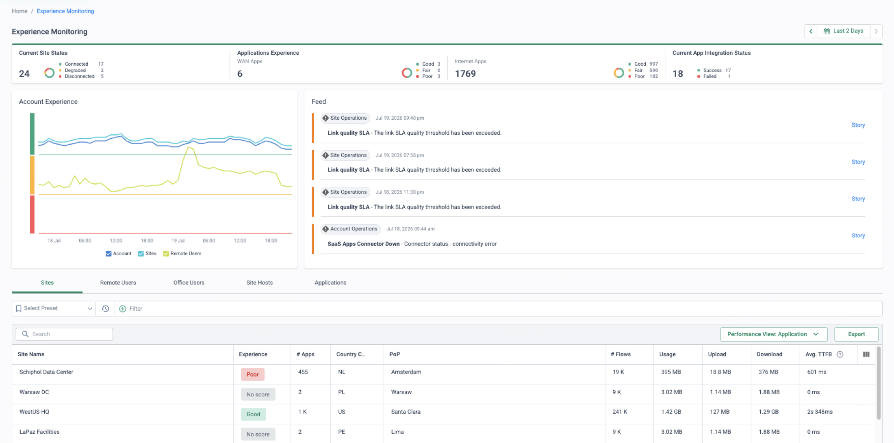
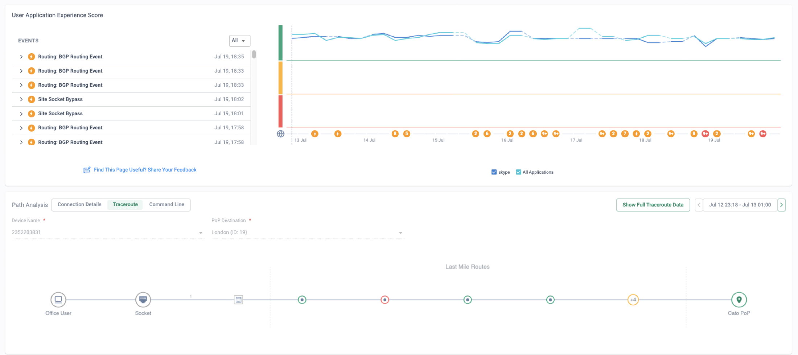
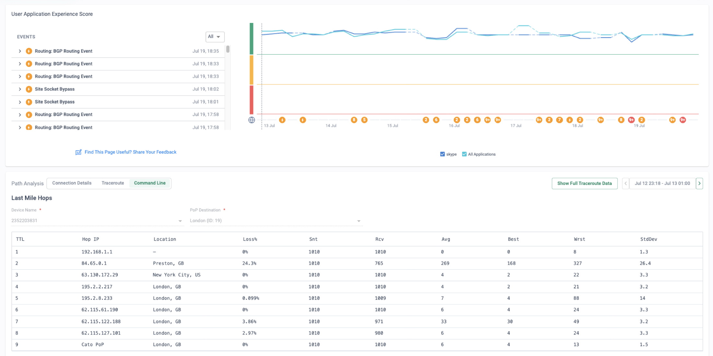
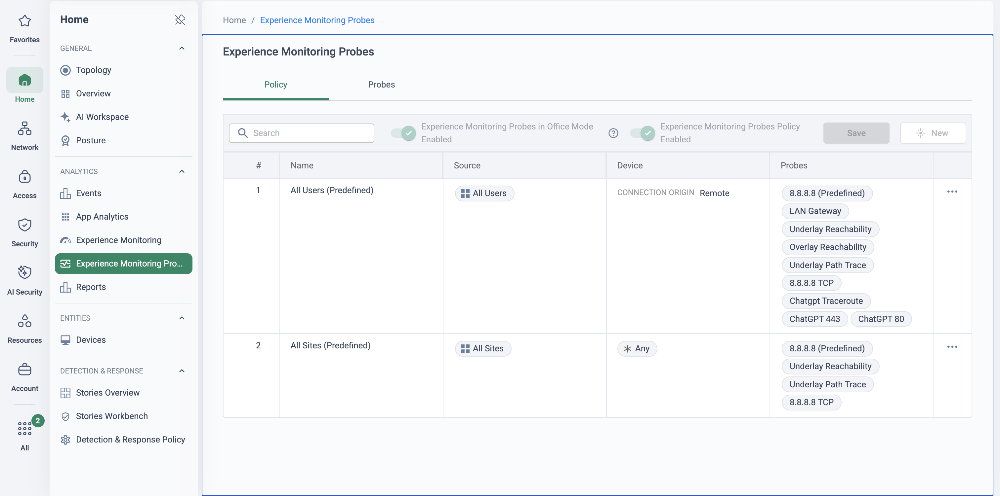

Segment 7 of the 60-minute platform demo — minutes 40 to 45,
the last five minutes of screen time. Every flow the previous six segments showed produced
telemetry; this segment turns it into evidence. Close on a per-user, per-app experience score
and the fault domain found hop by hop, so the question the prospect will hear most — “is it
slow because of Cato?” — is answered from the console, not argued in a war room.
Because the Client, the Socket, the PoP and the backbone are one platform, Cato
sees every hop a user's traffic takes — and scores each one, so “the app is slow” resolves
to a named segment in seconds.
Users do not experience a network or a security stack; they experience a Teams call that
stutters or a CRM page that hangs. The ticket says “the app is slow”, and the truth sits
somewhere along a path that crosses the laptop, the home Wi-Fi, the ISP, the middle mile
and the application itself — each with a different owner and a different definition of
“fine”. Traditional monitoring watches the infrastructure the organisation owns, which is
exactly the part of a hybrid worker's path the traffic barely touches.
Experience Monitoring gives every site, user, host and application a score — Good, Fair or
Poor — and decomposes it node by node in Connection Details: device hardware, Wi-Fi, LAN
gateway, last mile, PoP, application. Each node is scored independently against published
thresholds, and application scores are judged against an AI baseline built from real
traffic for that application. This is the segment that lands best with a network or
operations audience, which is why the cut plan says never to drop it for them.
The five-minute story
Bridge in, three beats, bridge out
Bridge in — from App Connectors
“Every one of those flows produces telemetry, and that telemetry answers the question you
will hear most: is it slow because of Cato?”
Beat 1 — the scored view across users and sites
Say: “This is the helpdesk queue before it happens. Every site and
every user carries an experience score, and sorting worst-first shows who is about to
call.”
Show:Home → Experience Monitoring — the
summary bar, the Account Experience graph, the story feed, then the Sites and Remote
Users tabs sorted by experience.
Beat 2 — drill one user to the failing node
Say: “Pick the user at the top. One screen decomposes their path —
device, Wi-Fi, LAN gateway, last mile, PoP, application — and scores each piece on its
own. The one amber node is the fault domain. Not the laptop, not Cato, not the app.”
Show: the user drill-down, Connection Details node chain, then Path
Analysis for the hop-by-hop route from the device to the PoP with per-hop loss and latency.
Beat 3 — the proactive angle
Say: “Passive scoring is the default. On top of it you define
synthetic probes for the applications you care about, the anomaly engine raises stories
when a site-and-app pair drifts from its baseline, and the Site Experience report lands
on a schedule.”
Show:Home → Experience Monitoring Probes for
the probe policy, then the Site Experience template under Home → Reports.
Bridge out — to the close
“One console, seven capabilities, thirty-five minutes of screen time. What would you want
to see proven on your own traffic?”
What the engine does
Same engine, seen from the telemetry side
The six earlier segments showed the single-pass engine making decisions: allow, inspect,
block. This segment shows what the same engine observes while it does so. Because the Cato
Client on the device, the Socket at the site, the PoP and the global private backbone are
one platform, Cato measures every hop the traffic actually takes — and the decision this
capability makes is a score per segment, so the failing one is measured rather than inferred.
User and site traffic through the engine, measured at every hop
The decision this capability makes is a score per segment. Loss at ② with ③ and ④ clean is the ISP's circuit; a slow ④ with ①–③ green is the application's side of the fence. Either way the verdict is measured, not negotiated.
🎯
Fault domain in one view
Device, Wi-Fi, LAN gateway, last mile, PoP and application scored side by side in Connection Details — the conversation starts at the failing node, not at “whose fault is it?”.
🧑💻
Per-user, per-app truth
Every sanctioned application a user touches carries its own Good / Fair / Poor score against that app's AI baseline, so “slow” resolves to which app, how much and since when.
📄
Evidence for ISP disputes
Overlay and underlay probes separate the circuit from the tunnel, and Path Analysis keeps hop-by-hop loss and latency historically — “no fault found” becomes a documented circuit case.
📈
Proactive, not reactive
Synthetic probes on your terms, anomaly stories when a site-and-app pair drifts from its 14-day baseline, and scheduled Site Experience reports — degradation surfaces before users call it in.
Demo runbook
Minutes 40 to 45, step by step
Five minutes of screen time. The prospect has just watched a private application published
without inbound rules; this segment proves the platform can also tell them how that
application, and every other one, actually feels to the user. Practically: confirm the
demo tenant has a DEM licence before the call, and pre-select the user you will drill so
the chain is already loaded.
Open the scored view and sort worst-first
Home → Experience Monitoring
Say: “Account Experience is Good, so there is no global problem —
anything degraded is local and findable. The feed on the right is the platform raising
link-quality stories by itself, and the table is the helpdesk queue before it happens.”
Show: the summary bar, the Account Experience graph beside the story
feed, then the Sites tab sorted by experience with a Poor site at the top; flip to Remote
Users to show the same scoring per person. [1.5 min]

Beat 1, on screen. Point at the feed first — Link quality
SLA exceeded stories raised by the platform, not by users — then at the Sites table,
where one data-centre site sits at Poor (601 ms average TTFB across 455
apps) while another scores Good. Worst-first has already found tomorrow's tickets.
Drill one user to the failing node
Home → Experience MonitoringUser / site drill-down → Path Analysis
Say: “Here is one user — Marcus, an office user with the Client on his laptop behind
the site's Socket. His path is decomposed into nodes,
each scored on its own against published thresholds. Everything is green except one. That
is the fault domain: not the laptop, not the circuit, not Cato, not the app.”
Show: the user's drill-down page, the score timeline with its connect
and disconnect events, then the Connection Details node chain; hover the
amber node for its averages. [1.5 min]
Beat 2, on screen. The node chain with exactly one amber
node: Wi-Fi at −67.43 dBm, just past the −67 dBm Good threshold, scores
Fair — while device hardware (19.81% CPU), LAN gateway (0% loss, 3 ms), last mile (0%
loss, 15 ms) and the application stay green. The verdict is this user's Wi-Fi, and the
thresholds that say so are published.
Walk the path hop by hop
User / site drill-down → Path Analysis
Say: “When the amber sits on the last mile rather than the Wi-Fi, this is the
next click — on the same office user, or on his site.
Every hop from the device to the PoP, with per-hop loss and latency, kept historically.
If the loss starts before the PoP it is the local network or the ISP; if it starts on the
application route it is beyond Cato. Either way, here is the evidence.”
Show: the site or office-user drill-down, then the Traceroute
tab — the Last Mile Routes diagram
with the hop that turns red before a clean Cato PoP — then the Command Line
tab for the same route as a table. [1 min]

Path Analysis → Traceroute. The last-mile route from the site's
Socket to the London PoP, replayed over a historical window so intermittent faults cannot hide.
Point at where the colour starts: green hops, then one red hop and an amber collapsed
group before a clean Cato PoP — the drop is inside the ISP's network.

Path Analysis → Command Line. The same route as the circuit
ticket would need it: hop 2, the first hop inside the ISP, at 24.3% loss and
269 ms average over 1,010 probes, while the local gateway at hop 1 and the Cato
PoP at hop 9 (0% loss, 6 ms) are clean. This is what “is it slow because of Cato?” looks
like when the answer is no — and when the answer is a documented circuit case.
Close on the proactive loop
Home → Experience Monitoring ProbesHome → Reports
Say: “Everything so far was passive — real traffic, scored. On top of
it you define ICMP, TCP, HTTP/S and DNS probes for the applications you care about, scoped
by site or user group; the anomaly engine baselines each site-and-app pair and raises a
story when it drifts; and the Site Experience report arrives on a schedule. The monthly
service review writes itself.”
Show: the probe policy with a Site rule and a User rule, then the Site
Experience template in the Reports catalogue. If time is short, say it and skip the
click. [1 min]

Home → Experience Monitoring Probes. The proactive half in one
screen: a User rule for remote users and a Site rule for Sockets, each carrying reachability,
path-trace and per-application probes. Probes map to the application whose pages should show
their metrics, so the synthetic data lands beside the passive score.
If running late
Per the cut plan: drop the Path Analysis drill (step 3) and show the score only — Beat 1
and the Connection Details chain in Beat 2 carry the proof point on their own. Never cut this
segment if the audience is network- or operations-led; it is the one they came for.
Transition. Close the console and turn to the room with the bridge-out:
“One console, seven capabilities, thirty-five minutes of screen time. What would you want to
see proven on your own traffic?” Parked questions come first, then next steps and the PoV
scope on the flow page.
If they ask
Four likely questions
“Do we need another agent for this?”
No — the Cato Client on the device and the
Socket at the site already supply the telemetry, so there is nothing extra to deploy. The
DEM pages and features do need a separate DEM licence, and the device, Wi-Fi and LAN
gateway nodes need a recent Client on the endpoint.
Licensing and prerequisites →
“How do you know it is the ISP and not your tunnel?”
The last mile is measured two ways: overlay
probes inside the DTLS tunnel and underlay probes sent outside it, Socket-to-PoP or
Client-to-PoP. When both show loss the circuit is the problem, not the tunnel — and Path
Analysis shows which hop it starts at.
Probes and path analysis →
“What are the scores actually based on?”
Application scores are judged against an AI
baseline per application built from real traffic — Time to First Byte, TCP Connect, TLS
Connect, HTTP latency and HTTP/S error rate — so a Europe-hosted app reached from Sydney is
judged against what that path should deliver. Node scores use published thresholds, and
scoring counts successful outbound TCP flows only.
How each node is scored →
“Can it tell us before the users do?”
Yes — the Experience Anomaly engine
baselines TTFB for each site-and-application pair over 14 days, then evaluates every day's
traffic against it and raises stories with a criticality rating and playbook. Pair that
with a recurring Site Experience report and the review arrives on a schedule, not on a
ticket. Anomaly stories and reports →
For a remote worker's per-app drill-down in depth — the summary strip, the Select
Application widget and the Devices panel — hand off to
Remote Worker Experience.
![CMA user drill-down: a User Application Experience Score timeline with connect and disconnect events, above the Path Analysis Connection Details tab showing the node chain device, Wi-Fi, LAN gateway, last mile, London PoP, application. Each node has its own scored row: device hardware Good at 19.81 percent average CPU, Wi-Fi Fair at minus 67.43 dBm average signal strength shown amber, LAN gateway Good with zero packet loss and 3 milliseconds distance, last mile Good with zero probe loss and 15 milliseconds round trip, and the application Good.](../assets/img/em-connection-details.png)